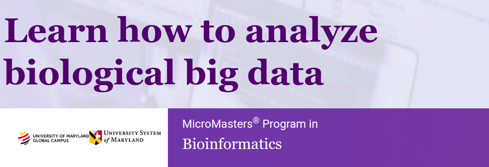

Bioinformatics Algorithms - an introduction
Bioinformatics is field that develops algorithms and software tools for understanding biological data. It combines computer science, biology, mathematics and statistics tools to analyze and interpret data.
Common applications of bioinformatics are identification of candidates genes and single nucleotide polymorphisms.
Three profoundly destabilizing scientific ideas ricochet through the twentieth century, trisecting it into three unequal parts: the atom, the byte, the gene.
Siddhartha Mukherjee on The Gene: An Intimate History
Discovery of DNA Double Helix
The double helix model was proposed by James Watson and Francis Crick, based on the X-ray crystallography work by Rosalind Franklin and Maurice Wilkins. There was also crucial work done by Erwin Chargaff, an biochemist that realized that there is the amount of Adenine = Thymine, and Cytosine = Guanine.
The paper describing the double helix structure of the DNA molecule was published on 1953. On 1962, Watson, Crick and Wilkins were awarded the Nobel Prize in Physiology or Medice. Unfortunately Rosalind Franklin died without recognition for her vital work in discovering the structure of DNA.
Courses
Bioinformatics specialization - UC San Diego
Professor Pavel Pevzner, Philip Compeau and Nikolay Vyahhi. There's a Bioinformatics Algorithms book by the same professors of the UC San Diego course, a fun and interactive way to learn bioinformatics algorithms.
- Finding Hidden Messages in DNA
- Genome Sequencing
- Comparing Genes, Proteins, and Genomes
- Molecular Evolution

Genomic Data Science - Johns Hopkins University
This Specialization covers the concepts and tools to understand, analyze, and interpret data from next generation sequencing experiments. It teaches the most common tools used in genomic data science including how to use the command line, along with a variety of software implementation tools like Python, R, Bioconductor, and Galaxy.
- Introduction to Genomic Technologies
- Genomic Data Science with Galaxy
- Python for Genomic Data Science
- Algorithms for DNA Sequencing

Bioinformatics MicroMasters - University of Maryland
- How to align DNA/RNA and protein sequences and the theory behind the algorithms that make them possible
- The effects of mutations on cellular processes and the structure of proteins
- How to generate model structure of proteins
- Basic R programming to analyze biological data
- How to apply packages in the R environment to typical problems in bioinformatics
Plant Bioinformatic Methods Specialization - University of Toronto
- Bioinformatic Methods I
- Bioinformatic Methods II
- Plant Bioinformatics
- Plant Bioinformatics Capstone

Bioinformatics Certificate - Harvard
- Understand the latest bioinformatics tools and topics, such as information DNA sequencing and assembly; BLAST output; probability and statistics; sequence alignment; ORF prediction; functional genomics; phylogenetics; sequence, gene, and protein databases; and social and ethical considerations.
- Enhance skills in computer science and programming through use of algorithms, data structures, string manipulation, encapsulation, resource management, security, software engineering, and web development.
- Develop competency with programming languages such as Java, Python, R, C++, and SQL.
- Acquire knowledge in a focused topic area, such as bioinformatic algorithms, genomics, medical informatics, and proteomics.
Fundamental Algorithms in Bioinformatics
This course covers fundamental algorithms for efficient analysis of biological sequences and for building evolutionary trees. This is an undergraduate course taught by UC Davis computer science professor Dan Gusfield focusing on the ideas and concepts behind the most central algorithms in biological sequence analysis. Dynamic Programming, Alignment, Hidden Markov Models, Statistical Analysis are emphasized.
What is DNA and how it's represented on a computer?
Our ability to read out this sequence of our own genome has the makings of a philosophical paradox. Can an intelligent being comprehend the instructions to make itself?
John Sulston on The Common Thread: A Story of Science, Politics, Ethics and the Human Genome
One class of macromolecules contained in chromosomes inside the cells nucleus are called nucleic acids. The chemical identity of those macromolecules are polymers of repeating chains of smaller molecules known as monomers. Because they tend to be long and thin, those polymers are called strands.
The nucleic acid monomer is called a nucleotide, formed of three parts: a sugar molecule, a negatively charged ion (called phosphate) and a compound called nucleobase. A key point is that the nucleotides of a specific type of nucleic acid always contain the same sugar and phosphate molecule, and they differ only on the nucleobase.
DNA molecule is made up of two strands, running in opposite directions. Each nucleobase bonds to a base in the opposite strand. Adenine bonds with Thymine, Cytosine bonds with Guanine. Those two strands are twisted together into a long spiral staircase structure called double helix.
A DNA string consists on the symbols A, T, C, G. We can use this representation to study and solve bioinformatics problems.
Bioinformatics Algorithm problems on Rosalind
Rosalind is a platform for learning bioinformatics through problem solving. It's inspired on Project Euler and it's name is a celebrates Rosalind Franklin -- the scientist whose work facilitated the discovery of the DNA double helix.
Rosalind - Reverse Complement Problem
Find the reverse complement of a DNA string
Given: A DNA String of length at most 1000.
Return: The reverse complement of the DNA String
Rosalind - Counting DNA Nucleotides
Given: A DNA String of length at most 1000
Return: Four integers (separated by spaces) counting the respective number of times that the symbols 'A', 'C', 'G' and 'T' occurs on the DNA string.
Podcasts:
- Bioninformatics Chat
- Fundamental Algorithms in Bioinformatics
- Learning Bayesian Statistics #1 Bayes, open-source and bioinformatics with Osvaldo Martin
- Python Podcast.init Building the Seq Language for Bioinformatics
References:
- Nature: Discovery of DNA Structure and function
- The Gene: An Intimate History - Siddhartha Mukherjee
- DNA: The Secret of Life - James D. Watson and Andrew Berry
- Bioinformatics Algorithms: An Active Learning Approach - Philip Compeau and Pavel Pevzner
- Wikipedia: Bioinformatics
- 4273π - Software for teaching and learning computational biology. It is a freely available, customized distribution of Raspbian GNU/Linux for the Raspberry Pi computer.